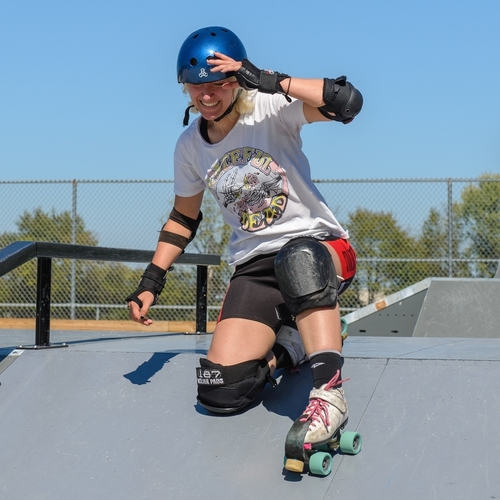

Quads PA provides resources, reviews, and info for quad skaters on skate parks in the greater Philadelphia area. Typically, skate parks cater to skateboarders. However, any seasoned skate park vet knows that boards aren't the only way to shred.
We offer perspectives on local skate parks from the perspective of quad skaters. Our aim to create a skate park resource that caters to Philly quad skaters. Quad skaters can look up different parks to help decide which park is best for them, as well as review parks to help inform other skaters.
New to skating quads at parks? Check out Planet Roller Skate's guide for beginners here !